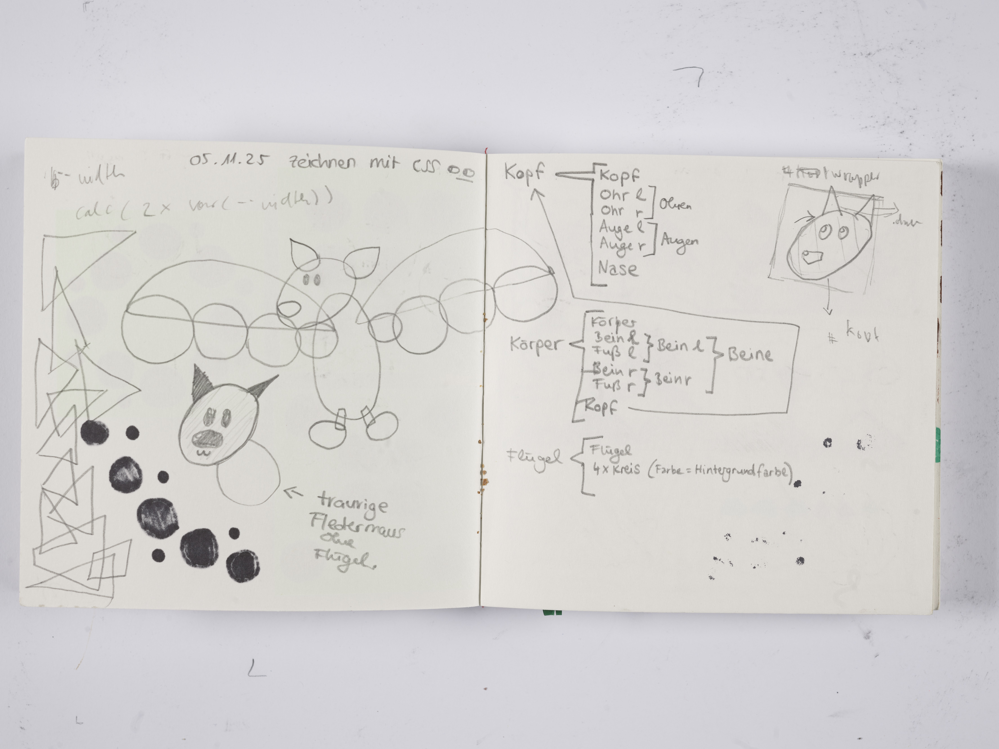
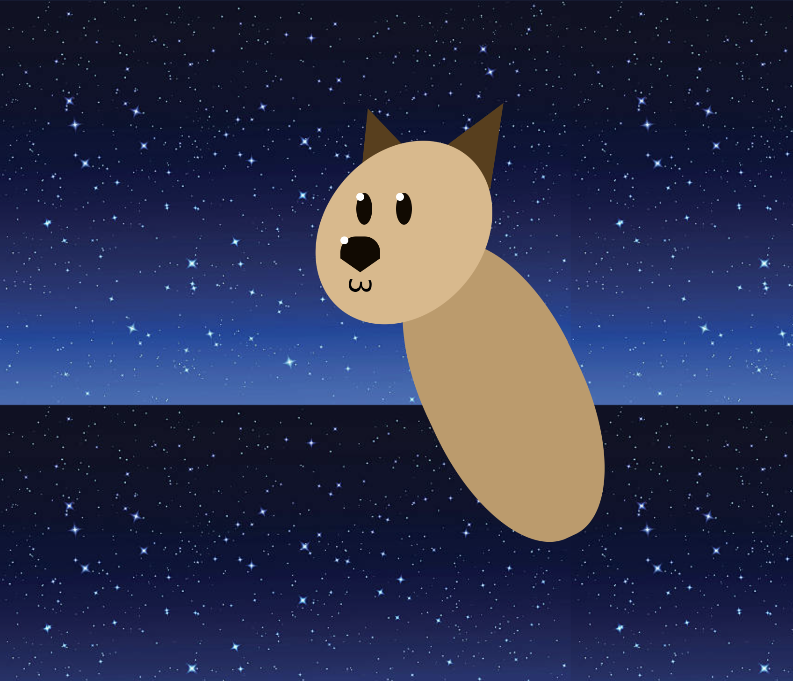

digitale grundlagen
DOKUMENTATION
Lena Buchmann
Gorch-Fock-Str.7
38104 Braunschweig
l.buchmann@hbk-braunschweig.de
Matrikelnummer: 80302
1.3 — css drawings
Drawing occurs when the pen touches the paper and my brain seeps out through the finger, through the pen, via ink, onto the page. The line follows the thought; it does not have to be concrete. Drawing with shapes using CSS, however, requires the opposite: everything must be very concrete, the thought crisp, and the instruction clear. I struggled with this. I also struggle with imposing shapes in figure drawing. This exercise felt clumsy and unnecessarily cumbersome. I tried to help myself by making sketches first, but even then it remained difficult. And so, this bat remains wingless.

